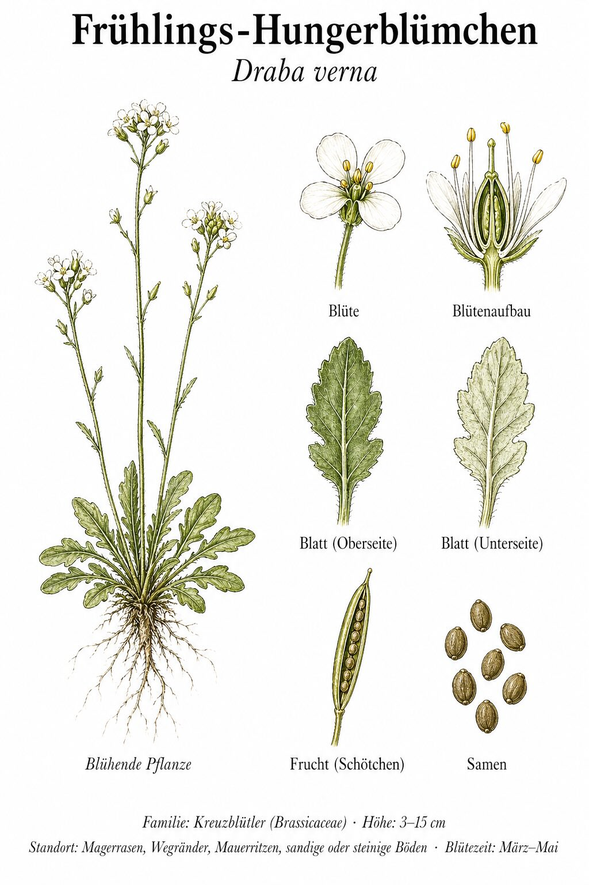
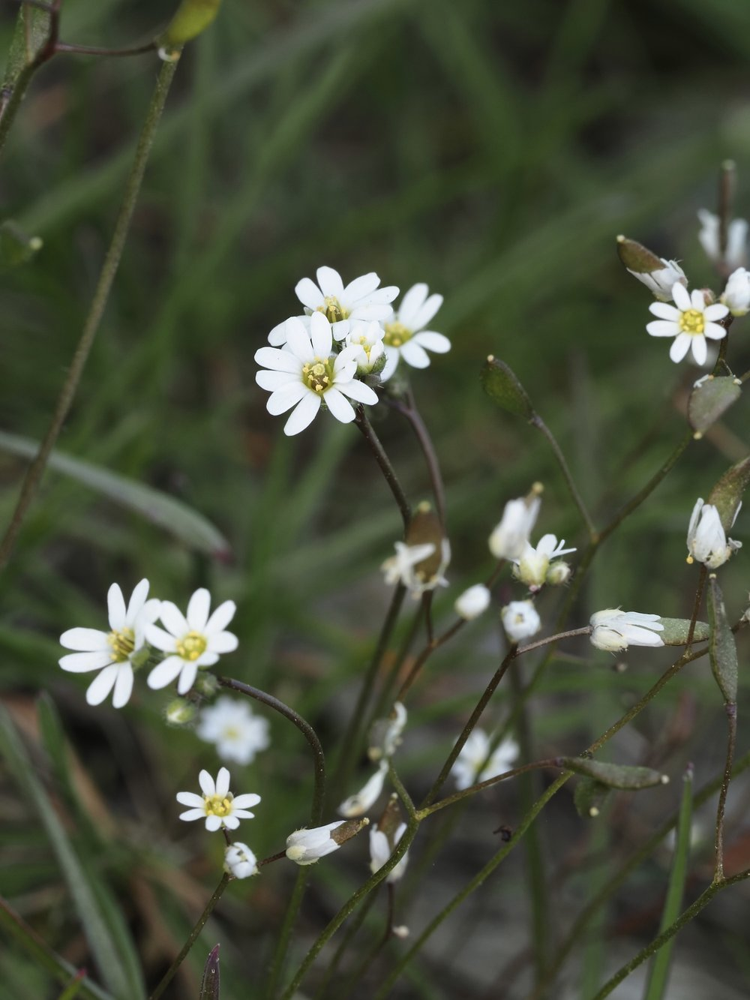

Größe ist nicht alles
Das Frühlings-Hungerblümchen ist winzig – die Gesamtpflanze passt auf eine Briefmarke. Und doch steckt in dieser kleinen Kreuzblütlerin eine der radikalsten Überlebensstrategien des Frühjahrs: Als strenger Einjähriger hat sie keine Zeit zu verlieren. Innerhalb weniger Wochen keimt sie, blüht, bildet Samen und stirbt. Der Boden ist dann noch kalt, Konkurrenz gibt es kaum – perfekte Bedingungen für eine Pflanze, die auf Geschwindigkeit setzt.
Kein Hunger, aber ein ehrlicher Name
Der Name ‚Hungerblümchen' klingt hart, beschreibt aber treffend seinen Lebensraum: nährstoffarme, offene Böden, auf denen andere Pflanzen kaum überleben. Trockene Wegränder, sandige Böschungen, kahle Ackerstellen – dort gedeiht das Hungerblümchen, weil es genau diese Lücken braucht. Wo der Boden fett und beschattet ist, verliert es den Kampf gegen die Konkurrenz.